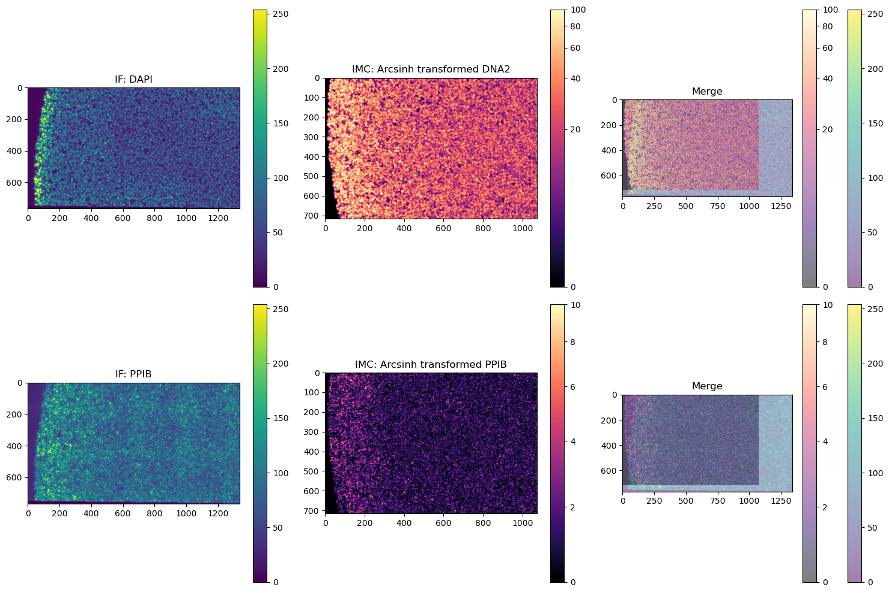

Custom preprocessing for different imaging technologies
This notebook demonstrates an image registration workflow using the Twocan library with custom preprocessors defined. We will register an example same-slide RNA-FISH and IMC image and demonstrate:
Writing a custom preprocessor class
Registration on non-nuclear channels
import numpy as np
from twocan import RegEstimator, iou_corr_single_objective, get_aligned_coordinates
from twocan.utils import pick_best_registration
from twocan.plotting import plot_registration, get_merge, AsinhNorm
import matplotlib.pyplot as plt
import matplotlib.colors as colors
import spatialdata as sd
import optuna
from tifffile import imread
from skimage import transform
import spatialdata_plot
/home/harrigan/.conda/envs/twocan/lib/python3.9/site-packages/pyproj/__init__.py:95: UserWarning: pyproj unable to set database path.
_pyproj_global_context_initialize()
/home/harrigan/.conda/envs/twocan/lib/python3.9/site-packages/numba/core/decorators.py:246: RuntimeWarning: nopython is set for njit and is ignored
warnings.warn('nopython is set for njit and is ignored', RuntimeWarning)
Load data
This data comes from Schulz et al. we’ll read in the tiffs and construct a SpatialData object
import os
os.chdir('/home/harrigan/repair-quant/twocan_repo/notebooks')
fish = np.stack([imread('data/Dapi_IF.tif'), imread('data/PPIB_RNA_IF.tif')])
FISH = sd.models.Image2DModel.parse(data=np.array([transform.rescale(x, 0.2, preserve_range=True, anti_aliasing=True) for x in fish]), c_coords=['DAPI', 'PPIB'])
IMC = sd.models.Image2DModel.parse(data=np.vstack([imread('data/DNA2(Ir193Di).tiff')[None,:,:],imread('data/C2_IMC_PPIB_10nM.tiff')[None,:,:]]), c_coords=['DNA2', 'PPIB'])
sdata = sd.SpatialData({'FISH': FISH, 'IMC': IMC})
INFO no axes information specified in the object, setting `dims` to: ('c', 'y', 'x')
INFO no axes information specified in the object, setting `dims` to: ('c', 'y', 'x')
Note that the FISH image is upsidedown relative to IMC!
fig, axs = plt.subplots(2, 3, figsize=(15, 10))
ax1, ax2, ax3 = axs[0]
ax4, ax5, ax6 = axs[1]
sdata.pl.render_images('FISH', channel='DAPI').pl.show(coordinate_systems=["global"], title="IF: DAPI", ax=ax1)
sdata.pl.render_images('IMC', channel='DNA2', cmap='magma', norm=AsinhNorm(vmax=100)).pl.show(coordinate_systems=["global"],title="IMC: Arcsinh transformed DNA2", ax=ax2)
sdata.pl.render_images('FISH', channel='DAPI', alpha = 0.5).pl.show(coordinate_systems=["global"], ax=ax3)
sdata.pl.render_images('IMC', channel='DNA2', cmap='magma', norm=AsinhNorm(vmax=100), alpha = 0.5).pl.show(coordinate_systems=["global"], title="Merge", ax=ax3)
sdata.pl.render_images('FISH', channel='PPIB').pl.show(coordinate_systems=["global"], title="IF: PPIB", ax=ax4)
sdata.pl.render_images('IMC', channel='PPIB', cmap='magma', norm=AsinhNorm(vmax=10)).pl.show(coordinate_systems=["global"],title="IMC: Arcsinh transformed PPIB", ax=ax5)
sdata.pl.render_images('FISH', channel='PPIB', alpha = 0.5).pl.show(coordinate_systems=["global"], ax=ax6)
sdata.pl.render_images('IMC', channel='PPIB', cmap='magma', norm=AsinhNorm(vmax=10), alpha = 0.5).pl.show(coordinate_systems=["global"], title="Merge", ax=ax6)
plt.tight_layout()

Lets define the FISH preprocessor. It should have an init, config, and call methods.
def FISHPreprocessor(image, registration_channels):
class FishProcessor:
def __init__(self, binarization_threshold=0.1, sigma=1):
self.binarization_threshold = binarization_threshold
self.sigma = sigma
def configure(self, trial_params):
if trial_params:
# Extract IF-specific parameters from trial params
if "FISH_gaussian_sigma" in trial_params:
self.sigma = trial_params["FISH_gaussian_sigma"]
if "FISH_binarization_threshold" in trial_params:
self.binarization_threshold = trial_params["FISH_binarization_threshold"]
return self
def __call__(self, source_image):
source_image = source_image.sum(0)
source_image = source_image / source_image.max()
source_image = gaussian(source_image, sigma=self.sigma)
source_image = source_image > self.binarization_threshold
return source_image
Now, we will modify the trial to propose parameters for FISH preprocessing. We only have to change two lines: these are indicated by # CHANGE!
def registration_trial(
trial, images, registration_channels,
moving_image='IMC', static_image='IF',
moving_preprocessor=IMCProcessor(), static_preprocessor=IFProcessor()
):
# Set up trial parameters
trial.suggest_float("FISH_binarization_threshold", 0, 1) # CHANGE!
trial.suggest_float("FISH_gaussian_sigma", 0, 5) # CHANGE!
trial.suggest_categorical("IMC_arcsinh_normalize", [True, False])
trial.suggest_float("IMC_arcsinh_cofactor", 1, 100)
trial.suggest_float("IMC_winsorization_lower_limit", 0, 0.2)
trial.suggest_float("IMC_winsorization_upper_limit", 0, 0.2)
trial.suggest_float("IMC_binarization_threshold", 0, 1)
trial.suggest_float("IMC_gaussian_sigma", 0, 5)
trial.suggest_categorical("binarize_images", [True])
trial.suggest_categorical("registration_max_features", [int(1e5)])
trial.suggest_categorical("registration_percentile", [0.9])
trial.suggest_categorical("moving_image", [moving_image])
trial.suggest_categorical("static_image", [static_image])
# Extract arrays and channels
source = images[moving_image].to_numpy()
target = images[static_image].to_numpy()
source_reg = source[images[moving_image].c.to_index().isin(registration_channels)]
target_reg = target[images[static_image].c.to_index().isin(registration_channels)]
# Preprocess images
moving_preprocessor.configure(trial.params)
static_preprocessor.configure(trial.params)
source_processed = moving_preprocessor(source_reg)
target_processed = static_preprocessor(target_reg)
# list of attributes to set as NaN when trial fails
df_na_list = [
'registration_matrix','prop_source_covered', 'prop_target_covered',
'logical_and', 'logical_xor','logical_iou',
'stack_image_max_corr','reg_image_max_corr',
'stack_cell_max_corr','reg_cell_max_corr'
]
# Check for invalid preprocessing results
if (target_processed).all() or (~target_processed).all():
[trial.set_user_attr(k, np.NaN) for k in df_na_list]
return
if (source_processed).all() or (~source_processed).all():
[trial.set_user_attr(k, np.NaN) for k in df_na_list]
return
# Register images
reg = RegEstimator(trial.params["registration_max_features"], trial.params["registration_percentile"])
try:
reg.fit(source_processed, target_processed)
except cv2.error:
[trial.set_user_attr(k, np.NaN) for k in df_na_list]
return
# Check for invalid registration results
if (reg.M_ is None) or (np.linalg.det(reg.M_[0:2,0:2]) == 0):
[trial.set_user_attr(k, np.NaN) for k in df_na_list]
return
if np.allclose(reg.transform(source_reg), 0):
[trial.set_user_attr(k, np.NaN) for k in df_na_list]
return
# Compute registration metrics
score = reg.score(source_processed, target_processed)
# Transform and stack images
stack = reg.transform(source, target)
# Extract channel-specific stacks
reg_stack = stack[np.concatenate([
images[moving_image].c.to_index().isin(registration_channels),
images[static_image].c.to_index().isin(registration_channels)
])]
# Check for invalid registration results
if (reg.M_ is None) or (np.linalg.det(reg.M_[0:2,0:2]) == 0):
[trial.set_user_attr(k, np.NaN) for k in df_na_list]
return
if np.allclose(reg.transform(source_reg), 0):
[trial.set_user_attr(k, np.NaN) for k in df_na_list]
return
def get_max_corr(stack, mask, n_channels):
corr_matrix = multi_channel_corr(
stack[:,mask][:n_channels],
stack[:,mask][n_channels:]
)
if np.all(np.isnan(corr_matrix)):
return np.nan
else:
return np.nanmax(corr_matrix)
# Image intersection correlations
mask = reg.transform(np.ones(source_processed.shape), np.ones(target_processed.shape)).sum(0) > 1
stack_image_max_corr = get_max_corr(stack, mask, source.shape[0])
reg_image_max_corr = get_max_corr(reg_stack, mask, source_reg.shape[0])
# Pixel intersection correlations
mask = reg.transform(source_processed, target_processed).sum(0) > 1
stack_cell_max_corr = get_max_corr(stack, mask, source.shape[0])
reg_cell_max_corr = get_max_corr(reg_stack, mask, source_reg.shape[0])
# Compute registration metrics
score = reg.score(source_processed, target_processed)
trial.set_user_attr('registration_matrix', reg.M_)
trial.set_user_attr('source_sum', score['source_sum'])
trial.set_user_attr('target_sum', score['target_sum'])
trial.set_user_attr('logical_and', score['and'])
trial.set_user_attr('logical_or', score['or'])
trial.set_user_attr('logical_xor', score['xor'])
trial.set_user_attr('logical_iou', score['iou'])
trial.set_user_attr('stack_image_max_corr', stack_image_max_corr)
trial.set_user_attr('reg_image_max_corr', reg_image_max_corr)
trial.set_user_attr('stack_cell_max_corr', stack_cell_max_corr)
trial.set_user_attr('reg_cell_max_corr', reg_cell_max_corr)
---------------------------------------------------------------------------
NameError Traceback (most recent call last)
Cell In[10], line 4
1 def registration_trial(
2 trial, images, registration_channels,
3 moving_image='IMC', static_image='IF',
----> 4 moving_preprocessor=IMCProcessor(), static_preprocessor=IFProcessor()
5 ):
6
7 # Set up trial parameters
8 trial.suggest_float("FISH_binarization_threshold", 0, 1) # CHANGE!
9 trial.suggest_float("FISH_gaussian_sigma", 0, 5) # CHANGE!
NameError: name 'IMCProcessor' is not defined
def custom_registration_trial(trial, IMC, FISH, registration_channels):
# source and target are sdata
# FISH parameters
FISH_binarization_threshold = trial.suggest_float("FISH_binarization_threshold", 0, 1)
FISH_gaussian_sigma = trial.suggest_float("FISH_gaussian_sigma", 0, 5)
# IMC parameters
IMC_arcsinh_normalize = trial.suggest_categorical("IMC_arcsinh_normalize", [True, False])
IMC_arcsinh_cofactor = trial.suggest_float("IMC_arcsinh_cofactor", 1, 100)
IMC_winsorization_lower_limit = trial.suggest_float("IMC_winsorization_lower_limit", 0, 0.2)
IMC_winsorization_upper_limit = trial.suggest_float("IMC_winsorization_upper_limit", 0, 0.2)
IMC_binarization_threshold = trial.suggest_float("IMC_binarization_threshold", 0, 1)
IMC_gaussian_sigma = trial.suggest_float("IMC_gaussian_sigma", 0, 5)
# ===============================================
# do preprocessing for registration
FISH_reg = FISH[FISH.c.to_index().isin(registration_channels)]
IMC_reg = IMC[IMC.c.to_index().isin(registration_channels)]
FISH_processed = preprocess_if(FISH_reg.to_numpy(), 1, True, FISH_binarization_threshold, FISH_gaussian_sigma)
IMC_processed = preprocess_imc(IMC_reg.to_numpy(), IMC_arcsinh_normalize, IMC_arcsinh_cofactor, [IMC_winsorization_lower_limit, IMC_winsorization_upper_limit], True, IMC_binarization_threshold, IMC_gaussian_sigma)
return [IMC_processed, FISH_processed]